Part 0: Calibrating the Camera and Capturing a 3D Scan
In Figure 1, I take a 3D scan of a doll, which will be used later for building a NeRF.
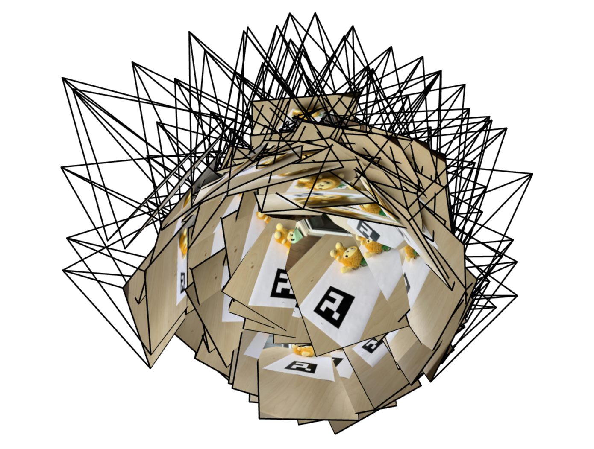
(a) screenshot 1.
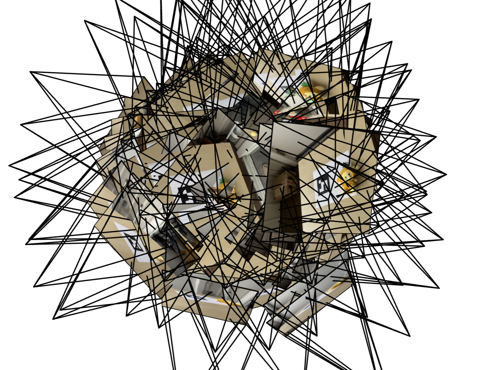
(b) screenshot 2.
Figure 1. Example screenshots of the iphone camera frustums visualization in Viser.
Part 1: Fit a Neural Field to a 2D Image
In this part, I will create a MLP network with Sinusoidal Positional Encoding (PE), which can make the neural network learn the high frequencies more easily. The architecture of the neural network is shown in Figure 2. The number of layers is 10 (excluding the Linear (3) for r, g, b channels); the width is 256; the learning rate is 0.5e-2.
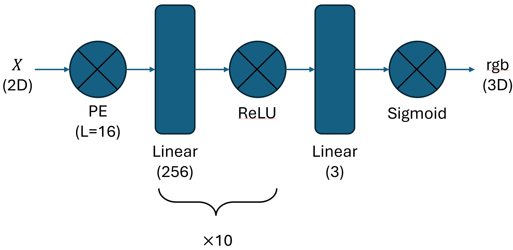
Figure 2. The network architecture of a 2D neural field.
Training results of the provided test image
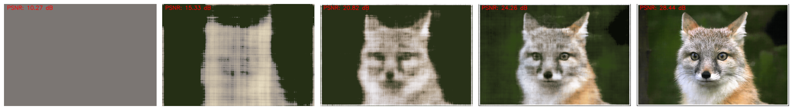
Figure 3. The training progress of the provided test image.
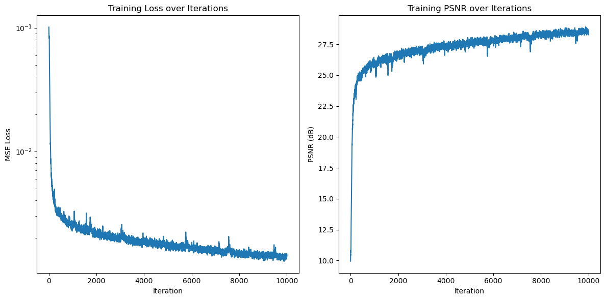
Figure 4. The loss and PSNR of the provided test image.
Training results of an "egg" toy
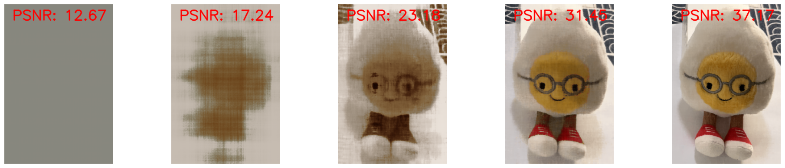
Figure 5. The training progress of an "egg" toy.
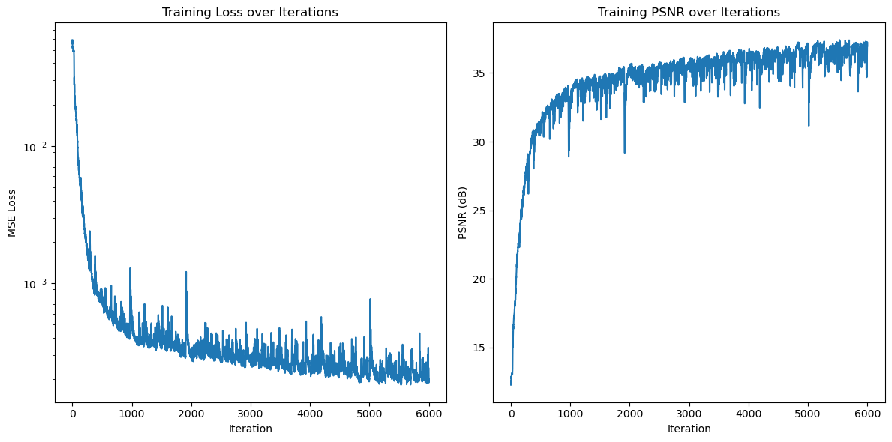
Figure 6. The loss and PSNR of an "egg" toy.
Hyperparameter tuning
In this sub-part, I tried different L and width. The training progress is shown in Figure 7. We can notice that:
If the L is extremely small, we will lose most of the high frequency information. Even though the width is very large, we still cannot get a good PSNR.
If the width is extremely small, the image cannot be recovered well even though the frequency information is rich. The reason is that the neural network is not expressive enough so that the PSNR is still low.
The summery of the results is shown in Table 1.
Table 1. Performance Comparison with L = 2, 16 and Width = 32, 256.
PSNR value
L = 2
L = 16
Width = 32
21.40
24.85
Width = 256
23.78
28.97
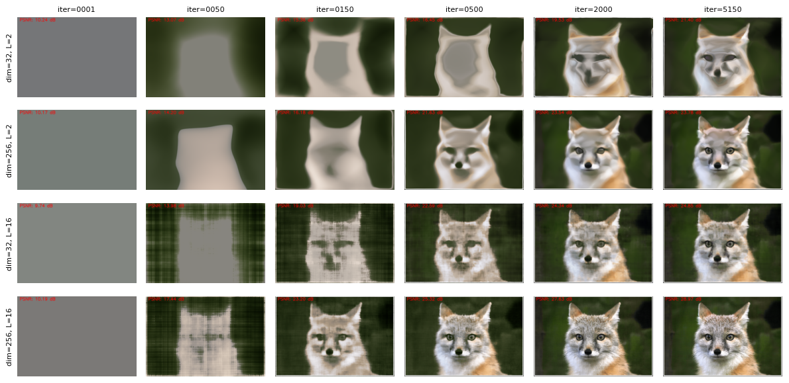
Figure 7. The training progress of the hyperparameter tuning.
The corresponding PSNR during the training progress is shown in Figure 8.
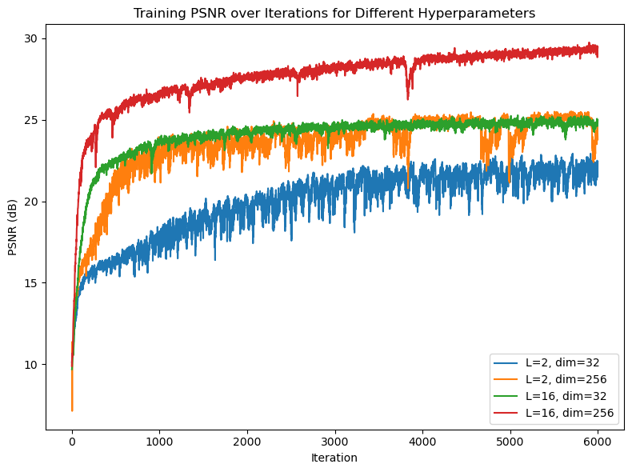
Figure 8. The loss and PSNR of the hyperparameter tuning.
Part 2: Fit a Neural Radiance Field from Multi-view Images
NeRF Training Pipeline Summary
1. Data Loading
The code loads training, validation and test data from
toy2_camera_poses_undist.npz using NumPy.
images_train: training images, normalized to [0, 1].
c2ws_train: camera-to-world matrices for training views.
images_val: validation images (not heavily used in this script).
c2ws_val: camera-to-world matrices for validation views.
c2ws_test: camera-to-world matrices for novel test views.
focal: camera focal length (float).
A calibrated intrinsic matrix K is constructed as:
Uses a large final Δt for the last sample to approximate infinity.
Same alpha / transmittance / weights formulation as above.
Returns both rendered colors and per-sample weights (for importance sampling).
7. Rendering a Full Image
render_image(nerf, K, c2w, H, W, …) renders an entire image from
a single camera pose:
Generates a grid of pixel centers over width W and height H.
Converts pixels to camera coordinates and then to world-space rays.
Processes rays in chunks (default 8192) for memory efficiency.
Samples 3D points along each ray, queries NeRF and applies volume rendering.
Reshapes the result to (H, W, 3) and returns a CPU tensor.
8. Training Loop
The training configuration is roughly:
Hyperparameter
Value
Rays per batch (n_rays)
1024
Samples per ray (n_samples)
100
Near / Far
2 / 6 (LEGO), 0.02 / 0.5 (own images)
Optimizer
Adam
Learning rate
5e-4
Iterations
8000
The main training steps per iteration:
Sample random rays and target RGBs with sample_random_rays.
Sample 3D points along each ray in [near, far].
Flatten points and directions and query the NeRF network.
Apply volume rendering to get predicted RGB for each ray.
Compute loss using mean squared error:
loss = MSE(rgb_render, rgb_gt).
Backpropagate and update weights with Adam.
Every 100 iterations, the script:
Prints current loss and PSNR.
Renders a full image from a fixed train camera and saves it as a PNG snapshot.
9. Novel View Rendering & Video Export
After training, the network is evaluated on test camera poses
c2ws_test:
For each test pose, render_image is called to render a frame.
Frames are saved as PNGs in lego_test_frames/.
OpenCV’s VideoWriter combines all frames into an MP4 video
(lego_nerf_test.mp4) with a target FPS of 30.
10. Overall Pipeline
In summary, this code implements a standard NeRF pipeline:
Load posed images and camera parameters.
Sample rays and points in 3D space.
Encode positions and view directions with sinusoidal positional encoding.
Predict density and color using an MLP-based NeRF network.
Integrate along each ray using volume rendering to obtain RGB colors.
Train the network with MSE loss on sampled rays.
Render novel views and assemble them into a camera trajectory video.
Neural Radiance Field of LEGO
The visualization of rays and samples with camera of the LEGO being reconstructed is shown in Figure 9.
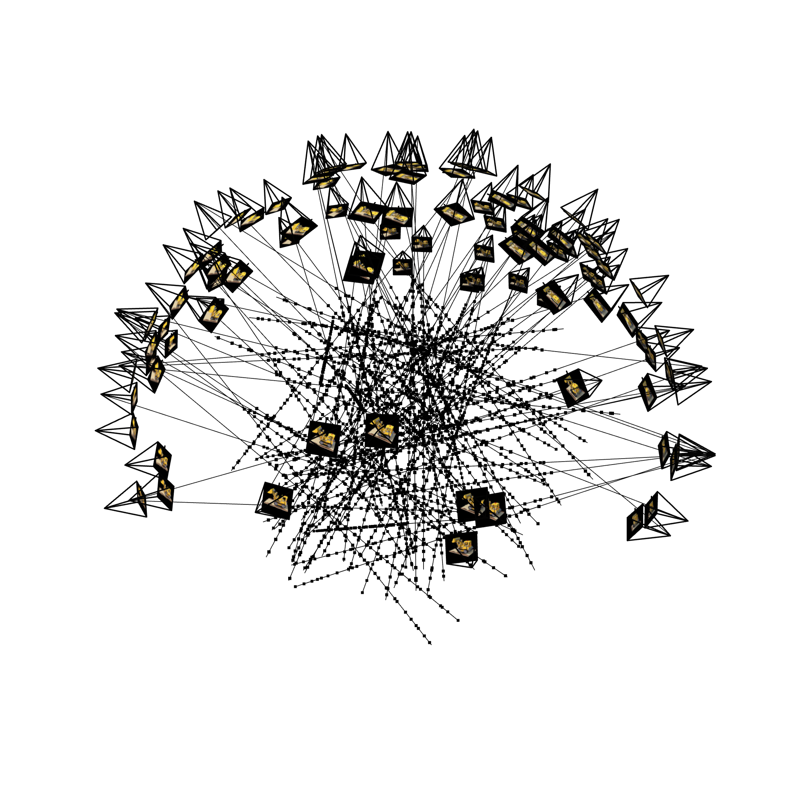
(a) screenshot 1.
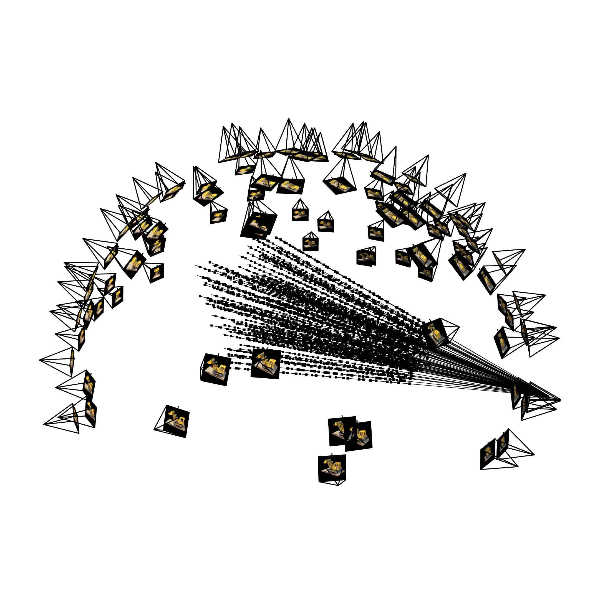
(b) screenshot 2.
Figure 9. Visualization of rays and samples with cameras: LEGO.
The visualization of the training progress is shown in Figure 10. The PSNR curve is shown in Figure 11.
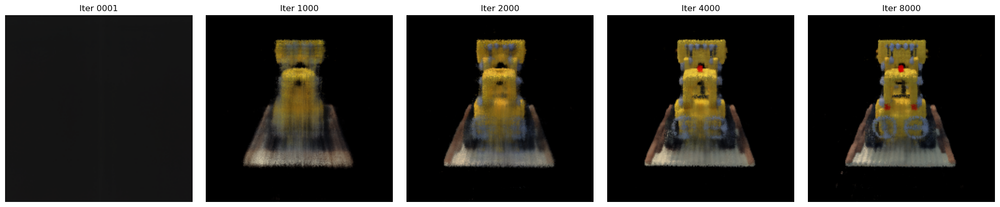
Figure 10. The visualization of the training progress of LEGO.
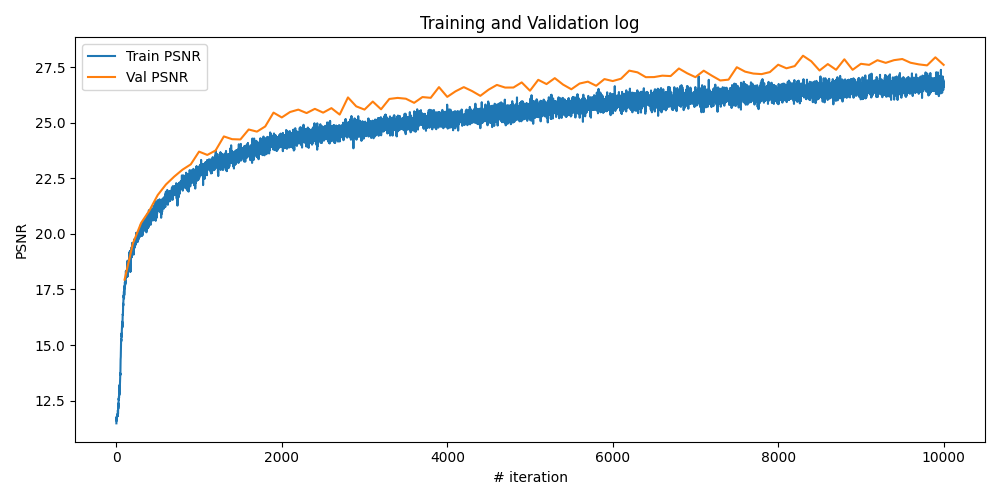
Figure 11. The PSNR of the training and validation progress.
The spherical rendering of the lego video is shown below.
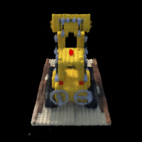
Figure 12. The spherical rendering of the lego video.
Neural Radiance Field of own images
Hyperparameter changes
Different maximum frequency (L=10, 12): PSNR increases 1.
Different learning rates (lr=2e-4, 5e-4, 1e-3): do not change much after training enough time.
Different "near", "far" values for rendering: it affects a lot. if not being carefully chosen, the model cannot work.
The visualization of rays and samples with camera of a doll being reconstructed is shown in Figure 13.
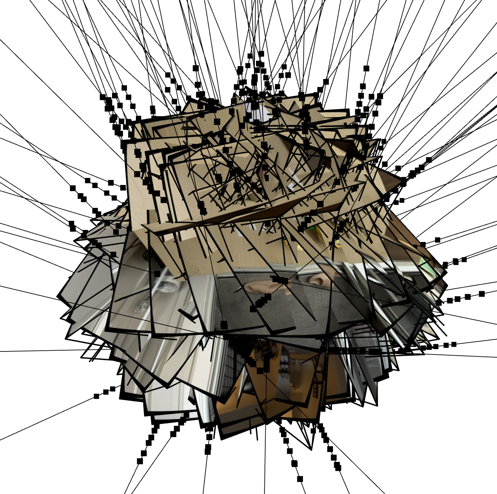
(a) screenshot 1.
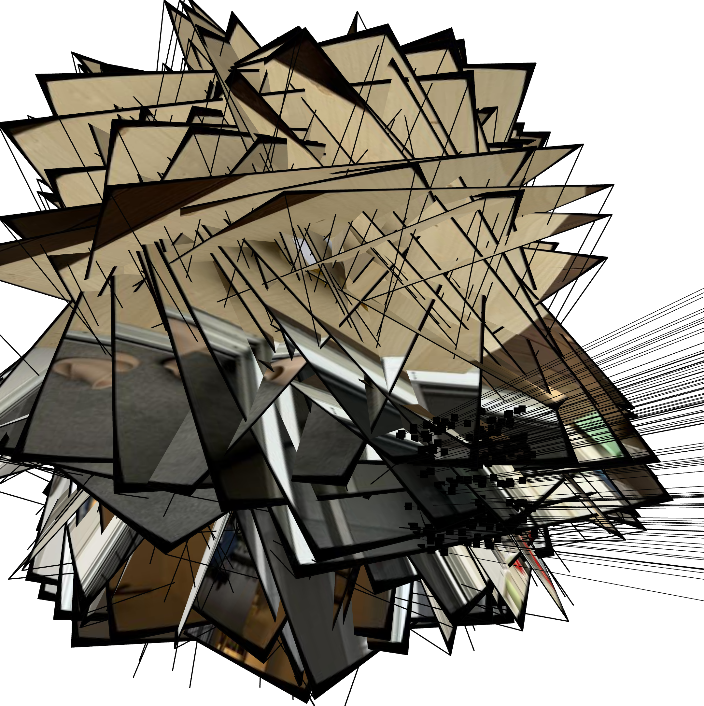
(b) screenshot 2.
Figure 13. Visualization of rays and samples with cameras: own images.
The visualization of the training progress is shown in Figure 14. The training progress and PSNR curve are shown in Figure 15.
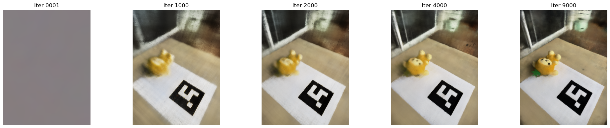
Figure 14. The visualization of the training progress of LEGO.
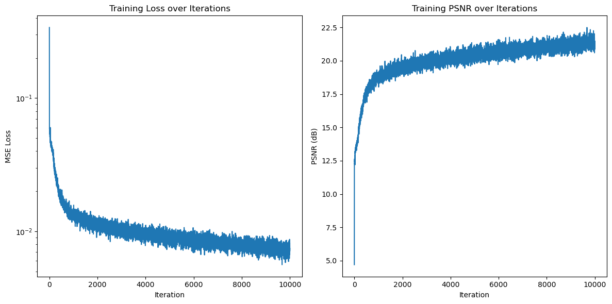
Figure 15. The PSNR of the training and validation progress.
The spherical rendering of the lego video is shown below.
Figure 16. The spherical rendering of the lego video.
Bells & Whistles: Render the depths map video
The expected depth follows the equation:
$$
t = \sum_{i} T_i \alpha_i t_i = \sum_{i} w_i t_i
$$
The generated depth map video of the LEGO is shown in Figure 17.
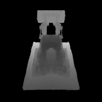
Figure 17. The spherical rendering of the lego depth map video.